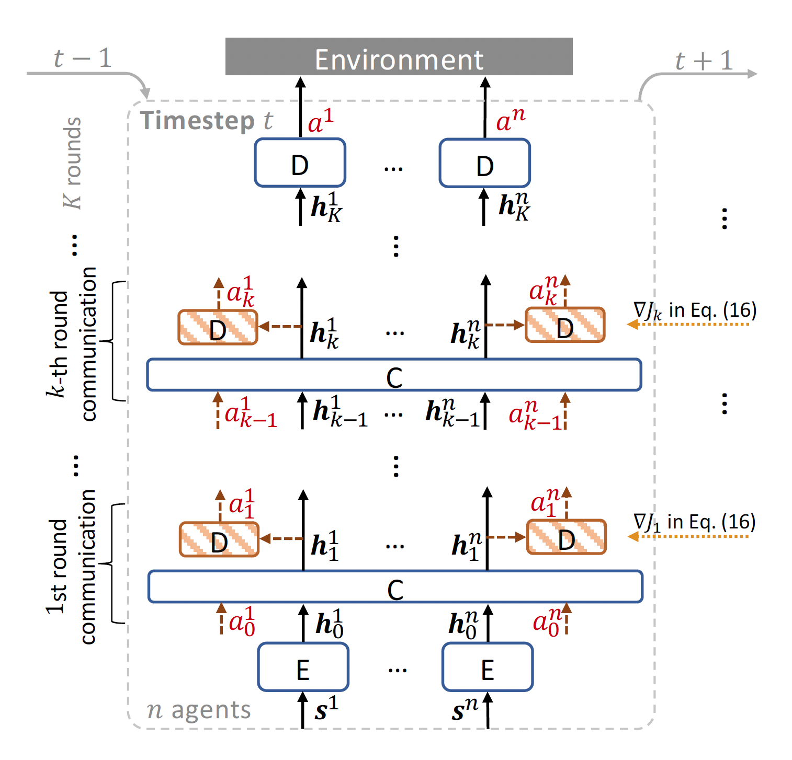
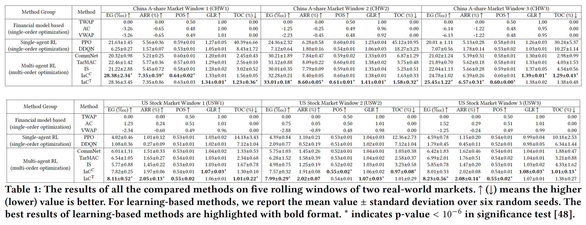

Learning Multi-Agent Intention-Aware Communication for Optimal Multi-Order Execution in Finance
Paper: https://arxiv.org/abs/2307.03119
Authors
- Yuchen Fang (Shanghai Jiao Tong University) arthur_fyc@sjtu.edu.cn
- Zhenggang Tang (University of Illinois Urbana-Champaign) zt15@illinois.edu
- Kan Ren (Microsoft Research) renkan@shanghaitech.edu.cn
- Weiqing Liu (Microsoft Research) weiqing.liu@microsoft.com
- Li Zhao (Microsoft Research) lizo@microsoft.com
- Jiang Bian (Microsoft Research) jiang.bian@microsoft.com
- Dongsheng Li (Microsoft Research) dongshengli@fudan.edu.cn
- Weinan Zhang (Shanghai Jiao Tong University) wnzhang@sjtu.edu.cn
- Yong Yu (Shanghai Jiao Tong University) yyu@apex.sjtu.edu.cn
- Tie-Yan Liu (Microsoft Research) tyliu@microsoft.com
Abstract
Order execution is a fundamental task in quantitative finance, aiming at finishing acquisition or liquidation for a number of trading orders of the specific assets. Recent advance in model-free reinforcement learning (RL) provides a data-driven solution to the order execution problem. However, the existing works always optimize execution for an individual order, overlooking the practice that multiple orders are specified to execute simultaneously, resulting in suboptimality and bias. In this paper, we first present a multi-agent RL (MARL) method for multi-order execution considering practical constraints. Specifically, we treat every agent as an individual operator to trade one specific order, while keeping communicating with each other and collaborating for maximizing the overall profits. Nevertheless, the existing MARL algorithms often incorporate communication among agents by exchanging only the information of their partial observations, which is inefficient in complicated financial market. To improve collaboration, we then propose a learnable multi-round communication protocol, for the agents communicating the intended actions with each other and refining accordingly. It is optimized through a novel action value attribution method which is provably consistent with the original learning objective yet more efficient. The experiments on the data from two real-world markets have illustrated superior performance with significantly better collaboration effectiveness achieved by our method.
The cash limit and conflicted trading decision problem in multi-order execution
The challenge of order execution lies in two aspects. First, the number of orders changes according to the portfolio allocation from day to day, which requires the order execution strategy to be scalable and flexible to support large and various number of orders. Second, cash balance is limited and all acquiring operations will consume the limited cash supply of the trader, which can only be replenished by the liquidating operations. The lack of cash supply may lead to missing good trading opportunities, which urges one to achieve balance between acquisition and liquidation, to avoid conflicted trading decisions that would cause cash shortage and poor trading performance.

We utilize multi-agent reinforcement learning to solve these challenges. Specifically, each agent is responsible for the trading of one asset to gain the flexibility against variate number of orders. And an intention-aware communication framework with action value attribution optimization is proposed to allow the agents to direct communicate and refine the actions they intended to take for multiple rounds, thus achieving better collaboration ability to reduce conflicted decisions.
Experiment Results
Our proposed method achieves significant improvements on both China A-share Market and US Stock Market in our backtest experiments.
Related Works
Double Deep Q-Learning for Optimal Execution
An End-to-End Optimal Trade Execution Framework based on
Proximal Policy Optimization
Oracle policy distillation for order execution